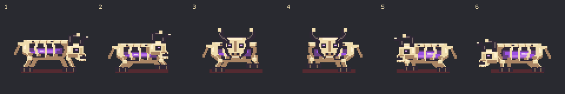
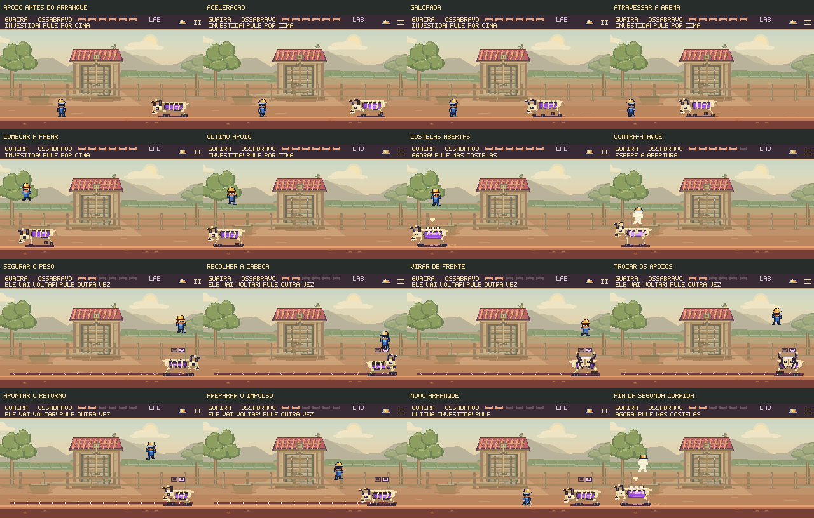

Peso no arranque.
Intenção na virada.
Ossabravo comprime o corpo, ganha velocidade e finca os cascos para parar. Na última etapa, recolhe a cabeça e gira antes de investir de volta. O movimento prepara a próxima decisão do jogador.
Uma corrida com impulso e frenagem
Vitória em 21,23 s, sem dano. Gravação a 30 fps, simulação a 60 Hz, sem áudio; entradas e colisões do jogo.
A velocidade muda de verdade. O arranque começa lento, a corrida é mais rápida no meio da arena e os últimos passos freiam. As patas acompanham a distância percorrida, com o corpo apoiado no início e no fim.
Uma abertura que continua clara. Frear ainda faz parte da investida. As costelas abrem quando ele para; nessa hora, o aviso de contra-ataque aparece. O trajeto anunciado e a duração da abertura foram preservados.
Virar envolve o corpo inteiro

A poeira nasce nos apoios dos cascos e permanece naquele ponto do chão enquanto se dispersa. Uma marca curta acompanha a frenagem; o corpo continua legível sobre o piso de argila.

Escolher a altura, atravessar e contra-atacar
Os ossos altos e os lançamentos separados continuam exigindo atenção ao pouso. Esta rota passa sob os ápices, muda para o salto na hora do contra-ataque e termina com um golpe descendente. A investida de ida e volta compõe a última etapa.
Vitória em 21,57 s, sem dano. As duas rotas completas usam os mesmos comandos e alcançam os mesmos momentos de acerto da revisão anterior.
Conferir o risco: um salto curto perde o capacete
O salto curto tardio encontra o primeiro osso durante a subida e perde o capacete aos 7,9 s. Este trecho registra uma falha real; não é uma vitória.
Conferência no jogo
3.645 testes aprovados, incluindo 13 novos casos de movimento. Compilação e validadores concluídos. O navegador verificou oito execuções com teclado e toque simulado, duas formas de vencer, dano e recuperação após uma abertura perdida. Dez pausas conservaram estado e imagem. A campanha normal passou em nove execuções com gamepad simulado.
Movimento reduzido mantém as trajetórias, os avisos e as oportunidades de ataque. As articulações decorativas e a poeira são suprimidas.
Resultados da revisão · Registro das três capturas
Um teste opcional de atlas foi ignorado por dependência indisponível no resolvedor padrão. Os percursos são ensaiados e verificam alternativas possíveis; dificuldade e diversão na primeira partida ainda pedem avaliação com jogadores novos.